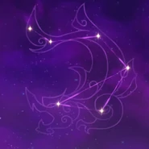

Lider de la Flota Crux Meridianam. Es una jefa bastante desenfadada y franca.
Artefacto/s recomendados


Atq% / Energia%

Bono electro

Daño / prob. critica
daño/prob critica>Atq%>Energia%
Talentos
Pasivas
Constelacion
Armas Recomendadas


Personajes compatibles